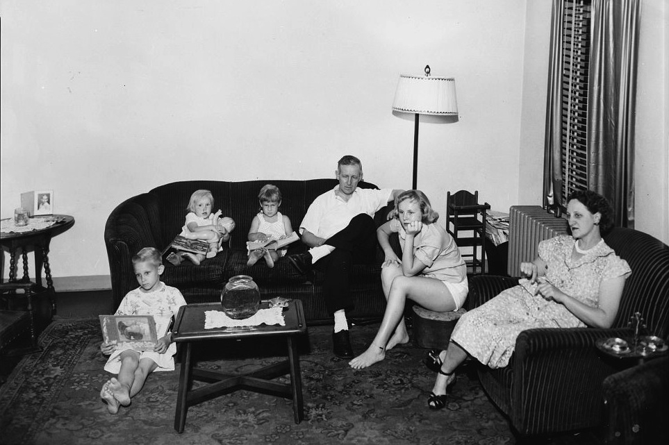

Techwood, perhaps the most politically sensitive terrain in the city, is the nation's oldest federal housing project, built during the Great Depression, a historic fact that ensured its place on the National Register of Historic Places. It occupies 75 acres of prime downtown property, bordered on three sides by Coca-Cola headquarters, Georgia Tech and the downtown hotel district.
Techwood Homes was an incredibly dangerous neighborhood that was plagued with violence and crime. When Atlanta got the bid for the Centennial Olympics, Techwood Homes was one of the first targets because it put “too much poverty in one place”. The housing authority thought to disperse the poverty by converting the neighborhood to a more mixed-income complex.
Techwood Flats
The area in which Techwood homes was built was originally called Techwood flats, a deteriorating slum for low income laborers. After the Great Depression, President Herbert Hoover’s administration enacted a housing project created to help reconstruct cities with poor living conditions.
In August 1936, the first residents moved into the renovated Techwood homes, the government’s first public housing project. Conditions of Techwood homes were pleasant for white families, many students of Georgia Tech lived in the area during their studies.
However, the reconstruction of Techwood flats meant that some of the original residents were displaced, about 1,611 families lost their homes. Originally, about 80% of the residents in techwood flats were african american. (Ruechel) After reconstruction into Techwood homes, by national policy, only white residents were allowed to move back in.

“Techwood Homes eliminated a black neighborhood to recreate a white one.”
frank ruechel
Techwood homes remained as an all-white housing project until 1968, after the civil rights movement. Six years after the desegregation of public housing projects, techwood homes’ residents were 50% African American.
The chief executive of Coca-Cola, Paul Austin, was alarmed by this and wanted to demolish the area to displace African American families farther away from the ‘main hub’ of atlanta. He submitted a proposal in 1974 to clear Techwood, relocating it’s residents to slums outside the city limits and replacing the property with moderate-income housing.
The plan was almost approved until Maynard Jackson was elected as Atlanta’s first Black Mayor and suspended the plan. Jackson started a new project in the 1980s to renovate the Techwood homes once again, but it wasn’t enough to help the increasing drug usage and violence in the community.
The public housing community became underfunded, and conditions returned to how they were in the early 1930s, when Techwood Homes was the Techwood Flats. Money was funneled into white suburbs after the ‘white flight’ (where white families fled to suburbs outside the city), leaving residents in these areas with little to no government assistance to rebuild the techwood homes community.
The Atlanta 1996 Olympics
Techwood Homes, invisible during the successful Olympics bid, has suddenly reappeared as Atlanta's most troublesome urban dilemma. Across the street from the future Olympic Village and within blocks of many future athletic events, Techwood has become an embarrassment to Games promoters eager to show off Atlanta to the world.
When Glover took over the reins of the city’s Housing Authority in 1994, she did do something. She started the Olympic Legacy Program, a plan for redeveloping Atlanta’s public housing.
The first project to be demolished was Techwood Homes. The logic was it put too much poverty in one place. The housing authority wanted to start over with a new approach: a private development for a mix of incomes.
“Techwood Homes was a place you would not drive through.”
Thomas Boston, Professor of Economics at Georgia Tech
"Atlanta has always wanted to be the next great city, so it's always spending a lot of money on the future... We can use the Olympics to bring us together and face the reality of what we are and do something about it."
Leon Eplan, atlanta city commissioner of planning and development
"We support the Olympics and think they're a fine thing for Atlanta, but we aren't going to let 'em hold 'em at our expense."
Margie Smith, president of the Techwood Homes tenants' association
“Part of creating a new place is that we wanted to put some distance between the old bad history and the new history.”
Renee Glover, director of the Atlanta Housing Authority during the 1996 Olympics
Techwood Homes, invisible during the successful Olympics bid, has suddenly reappeared as Atlanta's most troublesome urban dilemma. Across the street from the future Olympic Village and within blocks of many future athletic events, Techwood has become an embarrassment to Games promoters eager to show off Atlanta to the world.
When Glover took over the reins of the city’s Housing Authority in 1994, she did do something. She started the Olympic Legacy Program, a plan for redeveloping Atlanta’s public housing.
The first project to be demolished was Techwood Homes. The logic was it put too much poverty in one place. The housing authority wanted to start over with a new approach: a private development for a mix of incomes.